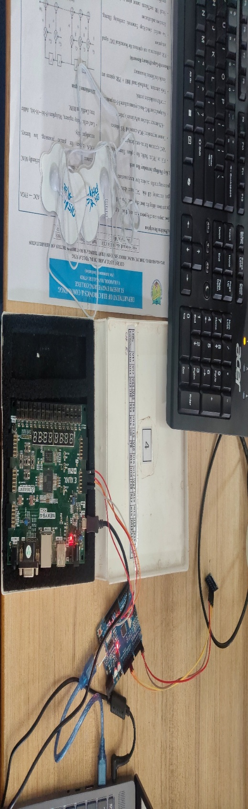
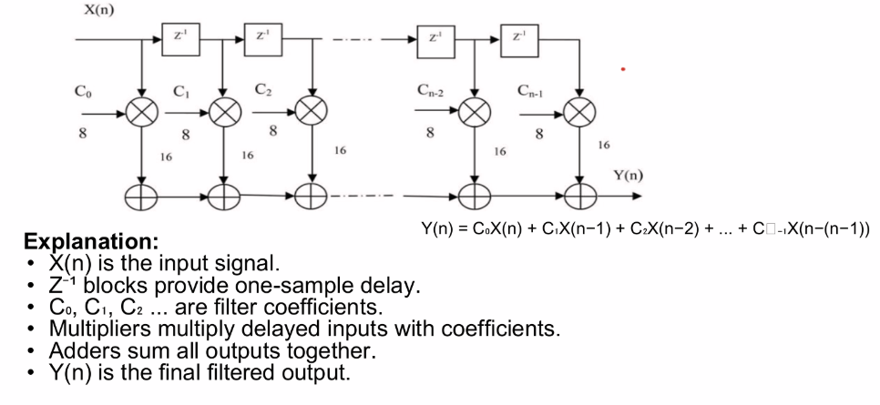

MEDTECH • FPGA • SIGNAL PROCESSING
Real-Time Foot Drop Detection and Rehabilitation System
Using IMU Sensor and FPGA-Based FIR Filtering

About the Project
The project focuses on developing a real-time system for foot drop detection and rehabilitation. The system combines sensor-based movement monitoring with digital signal processing to identify abnormal walking patterns and provide rehabilitation assistance.
Problem Statement
Real-time biomedical monitoring requires fast and efficient digital signal processing. Software-based filtering can introduce latency and increased power consumption in wearable and IoT systems.
Our project explores FPGA-based digital filtering to achieve low-latency processing for biomedical applications such as foot drop detection.
System Architecture
The system processes the sensor data through signal conditioning and an ADC before applying FIR filtering on the FPGA.

How It Works
Technologies Used
Key Features
- Real-time foot movement monitoring
- Detection of foot drop using movement characteristics
- FPGA-based real-time digital filtering
- Low-latency signal processing
- Rehabilitation assistance
- Continuous monitoring during walking
Achievement
Department-level project presentation
My Contribution
My contribution to the project included working on the digital signal-processing and FPGA implementation aspects of the system.